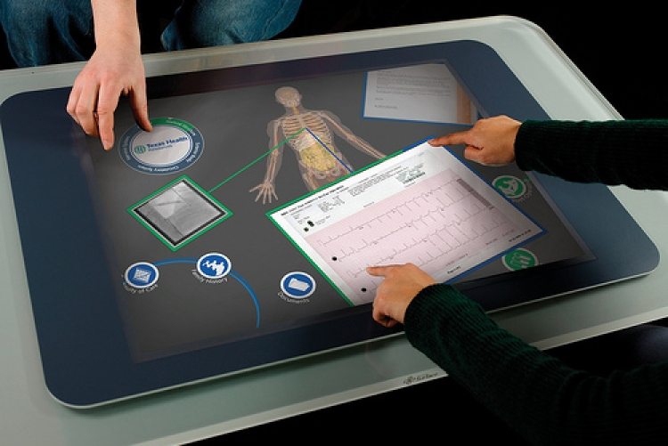

TAREAS DEL PRIMER PARCIAL
Estas son las tareas realizadas durante el primer parcial
Aplicaciones Web
Las aplicaciones web son programas accesibles desde un navegador de internet y no requieren instalación en el dispositivo. Estas aplicaciones suelen estar desarrolladas con tecnologías como HTML, CSS, JavaScript y servidores backend (PHP, Node.js, Python, etc.). Su contenido multimedia puede incluir imágenes, videos, gráficos interactivos y sonido.

Características:
- Accesibles desde cualquier dispositivo con conexión a Internet.
- Generalmente actualizadas centralmente por el servidor.
- Funcionan en diferentes plataformas.
Aplicaciones Cliente-Servidor
Las aplicaciones cliente-servidor se dividen en dos componentes principales: el cliente, que interactúa con el usuario, y el servidor, que procesa y almacena los datos. El cliente puede ser un programa instalado en un dispositivo o una interfaz web.
Características:
- La lógica de la aplicación se distribuye entre el cliente y el servidor.
- Las aplicaciones pueden usar multimedia en la interfaz del cliente.
- Ejemplos incluyen aplicaciones bancarias y juegos en línea.
Aplicaciones Móviles
Estas aplicaciones están diseñadas específicamente para dispositivos móviles, como teléfonos y tablets. Suelen aprovechar características del dispositivo, como la cámara, el GPS y la pantalla táctil.

Características:
- Disponibles en tiendas de aplicaciones como Google Play o App Store.
- Pueden contener contenido multimedia local o descargado.
- Ejemplos: Instagram, juegos móviles, editores de video móviles.
Aplicaciones Ubicuas
Las aplicaciones ubicuas están diseñadas para integrarse en el entorno y proporcionar servicios sin que el usuario tenga que realizar acciones directas. Se basan en la computación ubicua, que busca hacer la tecnología "invisible".
Características:
- Funciona en segundo plano y se adapta al contexto y ubicación del usuario.
- Uso de múltiples dispositivos y sensores para una experiencia personalizada.
- Ejemplos: sistemas de domótica, asistentes inteligentes como Alexa o Google Home.